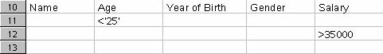

Table of Contents
Working with data ranges enables you to select them very easily, carry out sorting operations, or filter the data using the column and row headers, and thereby avoid risky manual data manipulation ! As you will see, it's very simple to do :
enter your data and organize as you usually do,
highlight what you want to become your data range; don't forget to include your column headers,
click on Data – Define range...
The following dialog box should appear :
You will see the range that you have selected highlighted in the background.
Give a name to the range designated in the field Range,
If the range isn't what you want click on the icon opposite the range reference and select another range,
Just to the right of this range, you will see a button marked More,
where the double arrow points to the right when the options are not shown, and to the left when the options are displayed, as in the screenshot.
- don't forget to tick the box marked 'Contains column headers', so that your headers are recognized when you carry out sorting,
- the box marked 'Insert or delete cells' enables you to, when working in a document, insert new data or delete it, and these modifications will be taken into account in the range selection
- the box marked 'Keep formatting', tells OpenOffice.org to keep the formatting of any new data that you might subsequently enter,
- the box marked 'Don't save imported data' refers to data that you may have called from a database, so these data will not be saved with your file.
Click on OK to close the dialog box and return to your document.
You can define as many ranges as you want; all you have to do is repeat the procedure explained above, and click on the button 'Add'
in the dialog box. The same goes if you want to delete a range, select the range you want and click on the corresponding button in the dialog box.
Once you have entered your ranges, select the one that you wish to work with in the following manner :
- in the menu Data choose 'Select range'
- in the window that appears, select the data range that you want and click on OK
- the range will appear highlighted in your document
Here is the range we're going to work on :
In order to sort your data, nothing could be easier: select the range that you want to work with, then:
in the menu Data – Sort
the following window should appear :
Under the tab Sort Criteria, you can define up to 3 criteria. We've decided to do an ascending sort, first by Gender, then by Age.
Let's look more closely at the options proposed under the tab Options :
All of these options will enable you to edit your sort operation in the same table or a similar table at the area you have specified previously (in our example, we chose to copy the result just below the first table).
Here is the result :
Now,
wasn't that easy ?!
4.1 Standard Filter
The use of filters is as simple as sorting. After having selected your range :
- go to the menu Data – Filter – Standard Filter...
- The following window should appear :
- fill in the data field names on which you want to base your filter by selecting them in the drop-down menu,
- here again, you can use up to 3 criteria with Boolean operators (and, or) and other conditions such as equals, greater than, less than, less than or equal to.... The value is represented by the data on which the filter is to be carried out in relation to the field name chosen,
- the More button, enables you to edit a table, taking into account regular expressions, case sensitivity or duplicates,
- in our example, we chose to copy the result onto the same sheet, a bit lower down (using the selection icon ).
Here's the result :
4.2 Autofilter
The Autofilter is slightly different from the standard filter. In order to understand what it does, let's use it and see what we get. Select the range of data, including column names.
- under Data, select Filter – Autofilter, and see what appears on the screen :
Next to each field name, a small button with an arrow has appeared. Click on the one next to the field 'Name' to see what it does :
As you will have noticed, the list of names represents the filter criteria and you can apply them differently to each column.
If you click on Standard, the same window as that described in the preceding chapter appears.
Let's click on Dupont and observe the result obtained :
The criteria corresponding to the name Dupont, and only Dupont, are displayed.
To cancel the filter operation, select the range and choose Data – Filter – Autofilter, untick Autofilter
4.3 Advanced Filter
The advanced filter is a filter that lets you use more than 3 filter criteria, up to a maximum of 8.
In order to use this filter, you have to create an array in which you'll enter the criteria; but let's use an example, it makes life so much easier !
Let's start from the example we already have :
1. copy the row bearing the field names of your range (Name, Age...) into empty cells on your sheet, for example at row 10,

2.
now enter your sort criteria, under each column, bearing in mind that
criteria on a same horizontal row are attached to the logical value
by an 'OR', whereas vertically they are attached as 'AND'. In order
to enter names with the equals sign, don't forget to put in quotation
marks (''). Here's the result
So, in this example, we are searching for people whose age is less than 25 AND (since the criterion appears under the preceding one) whose salary is greater than 35000. Here are the results after applying the filter (we'll see how in a second)
This is exactly what we asked for !
So, after having created your array
3. select the data range to which the filter should apply
4. choose Data – Filter – Advanced Filter,
5. in the window that appears, using the selection button, select the array that you defined at rows 10 to 12,
6. in the options (More>>), also indicate where you want your filtered data to appear
(we put it at row 17) and click on OK. Voilà ! It's in the can !
Author: Sophie Gautier
Thanks : To Guy Capra for his support and constant encouragement.
Intgr par : N/A
Last modifications : 20 July 2002
Contacts: OpenOffice.org Documentation http://documentation.openoffice.org
Translation : Alex Thurgood; screenshots: Daniel Strome
This document is published under the terms and conditions of the GNU Free Documentation License
© 2002 Sophie Gautier © 2002 Alex Thurgood © 2002 Daniel Strome